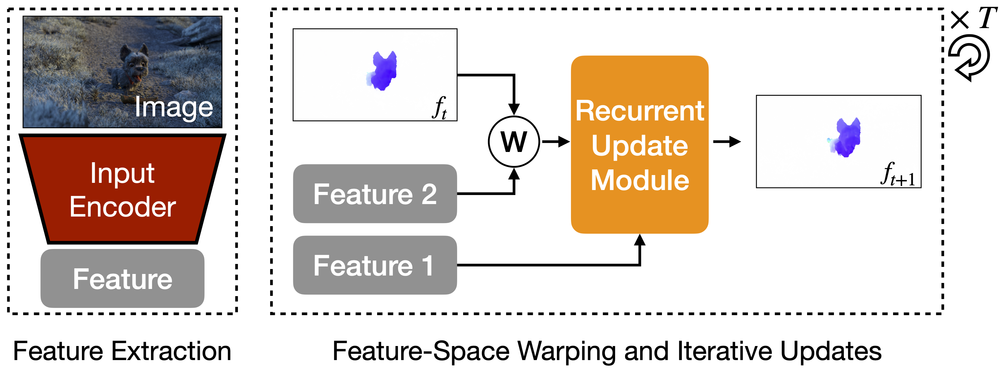

Yihan Wang
I'm a 3rd-year Ph.D. candidate at Princeton, advised by Prof. Jia Deng. I received my B.Eng. from the Special Pilot Class of Computer Science (a.k.a Yao Class) from Tsinghua University.
My current research focuses on efficient and scalable algorithms for geometric vision, with a specific interest in optimizations-based algorithms. I've also worked on reinforcement learning, efficient deep learning, and procedural generation.
Email: yw7685 [at] princeton [dot] edu
Selected Publications
(* indicates equal contribution)
